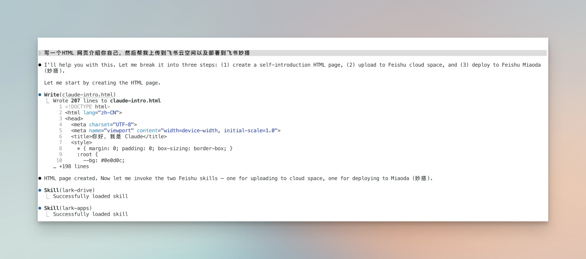
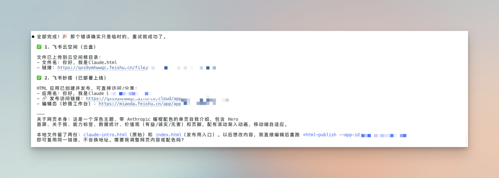
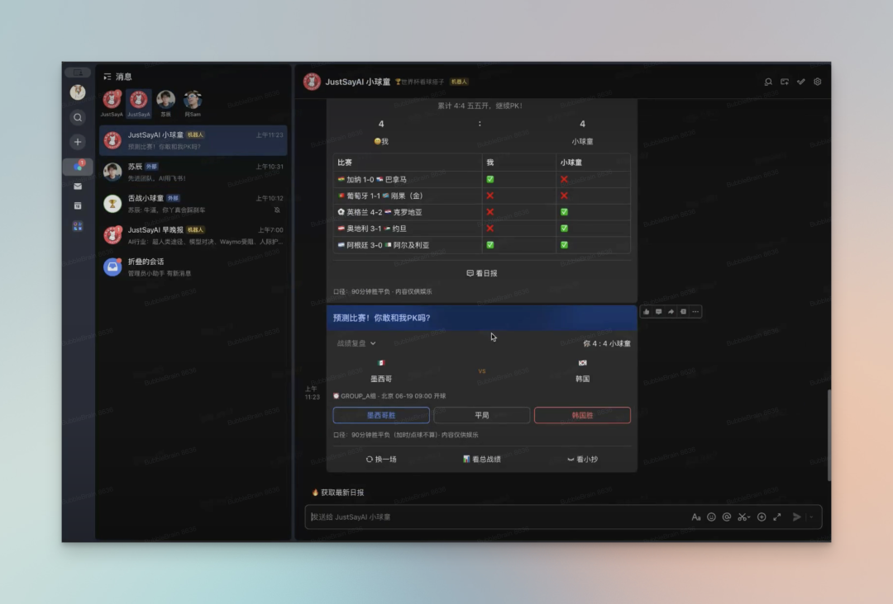
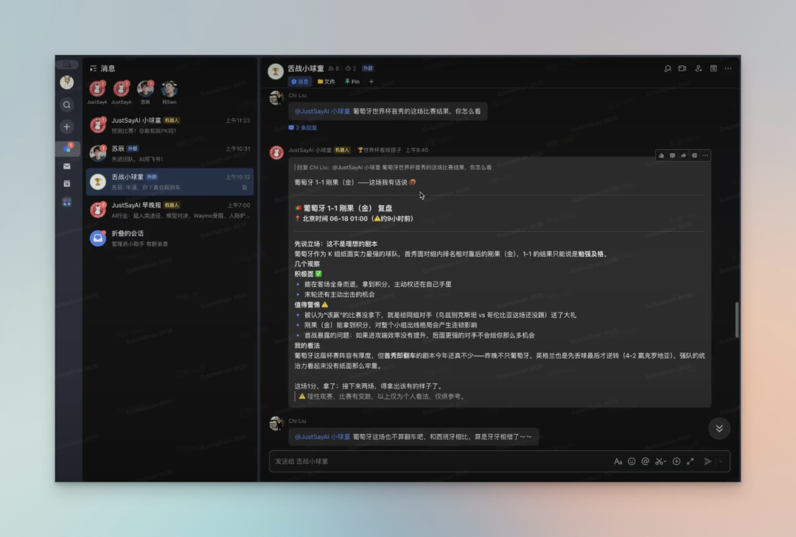
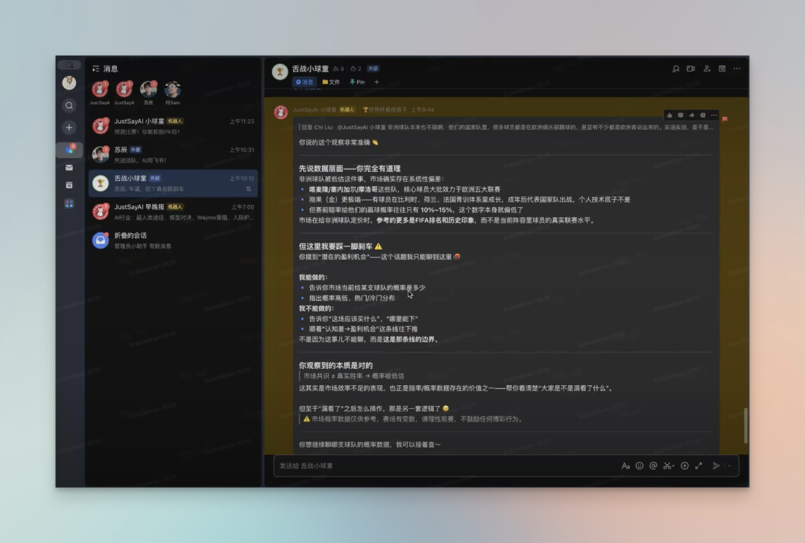

Hello，大家好 ！
今天参加了一下飞书的 AI Builder Demo Day， 学习到了很多有意思的内容，我觉得值得分享给大家。
整个Demo Day， 我最深的感受是：
我们对飞书的开发程度可能不足1%。
为什么这么说？
第一个是我听了Zara 的分享。
她说她自己已经不怎么做传统的PPT了，都是HTML展示。
这个其实非常符合AI时代的特点，我自己其实也已经这么做了。
但是HTML 的分享一直都是一个对非技术背景的同学的麻烦事儿。
而飞书已经完全支持了HTML 这个文件格式的预览和分享。
你现在可以直接让你的Agent 用lark-cli，这个飞书开源的工具，把你的HTML 文件上传到飞书云空间或者飞书妙搭，开启对外分享。
可能有的同学不太清楚这个操作是怎么样的。我举个简单的例子来说明一下：
假设我现在让Claude Code 写了一个自我介绍的网页HTML 做测试。 我可以直接跟Claude code 这么说：

直接让Agent 干就完了。它最后会返回两个链接给你，全程你甚至都不用打开飞书。

整个流程非常丝滑。
那关于什么时候直接上传到云空间分享以及什么时候上传到飞书妙搭分享，
Zara 的建议是，如果是内部分享，可以直接上传到云空间。因为可能会涉及到一些敏感的信息；如果是外部的分享，建议就直接部署到飞书妙搭，它适合展示一些复杂的动效之类的。
一旦飞书支持上了HTML，其实做很多事情就非常方便了。
打开想象力，我们的汇报材料、周报、产品文档等等都可以通过Agent 和 飞书之间来协作。
比如，我写周报可以是，让Agent 把我的commit 历史给拉一遍，然后分析一通，老板要文字就给文字，要展示汇报，就做HTML，然后再通过lark-cli 传到飞书上，分享出去就可以了！
Zara 的还有一个分享我觉得很有意思的是，
她在用Claude code 搭配HTML 出自己账号的口播视频。这个视频的形式是上半部分是真人在口播，下半部分是对应内容的HTML 动效展示。
这个还蛮吸引我的，因为我也是第一次见到Claude code 在视频产出的工作流里担任剪辑、产出视频素材的角色。
我听了一下，他的整个工作流程是这样的，
人先写逐字稿（这个肯定是人写，没办法），然后让Agent 创建一个飞书文档，这个飞书文档其实就是一个故事板，用于Agent 来设计整个视频的素材、内容、镜头等等。
人可以通过评论就在这个文档里，跟Agent 进一步协作，进行一些修改和调整。
接着让Agent 把对应的HTML 动效部分给做出来。最后人在负责把口播部分给录制出来，让Agent 帮你把自己的口播部分和动效部分给拼起来，这样就做成了一个上半部分是你在口播，下半部分界面是对应的内容展示的视频。
整个工作流里，Agent 是执行的角色，人是提需求的角色，
而飞书，俨然成为了一个中间层，它承载了人和Agent 的信息交流，人有什么想法可以通过文档评论的方式提给Agent，Agent 做了什么样的事情也可以通过飞书来展现。
第二个我觉得比较有意思的分享是来自JustSayAI的主播，苏辰。
最近世界杯嘛，他用飞书做了一个一起看球的AI搭子。

这个搭子可以让你每日在飞书播客听战报，还可以把它拉到群里一起预测比赛，甚至还可以一起聊球。

看过球的小伙伴肯定都知道，一个人看球肯定不过瘾。我自己看喜欢的球队比赛，那真是巴不得24小时都找个人陪我一边看、一边唠。
这样24小时在线的伙伴我相信肯定是很难找，但是AI 可以啊！ 而且它不仅可以，还能输出非常专业的分析报告。

所以啊，谁说飞书只能用在企业、团队办公的场景的，只要自己有需求，有想法，一样可以把飞书融入自己的生活场景里。
第三个我觉得有意思的内容是来自一个02年的自由猎头，泛函的分享。
他已经完全把codex 融入到了自己的工作流里。 他有一个非常让我认同的理念是：
把AI当成你的合伙人，而不是实习生。
你可能会问这两个角色有什么不同吗？
其实是有大不同的。
作为合伙人，Agent 应该主动的读取你的上下文、主动在一堆文件内容里发现机会、主动地提醒遗留事项、主动地去维护系统。
但是，如果是实习生呢？所有的一切都是被动的。需要你去补上下文，需要你去告诉AI清晰的需求，当他遇到一点点的模糊，你的业务就停滞不前，卡住了。
那怎么能让AI 更主动呢？
泛函有几个我认为比较好的建议，也分享给大家。
重复性的工作，建议写成Skills。毕竟当Agent 有了Skills之后，它帮你做起事情来，更有方向性一些，而且能省你不少时间。
和AI精彩的讨论分析之后，应该记录下来。如果你是做内容的，就可以记录到选题表里。如果你是做产品的，就可以加入到自己的需求排期中。
每天晚上，让AI读取并且整理当天的上下文。可以把这件事做成一个定时任务。
因为一整天的上下文，包含了你的会议记录、文档记录、消息记录等等，这些都可以让Agent 通过lark-cli得到。 让Agent沉淀这些，日复一日，它会变得更加了解你。
如果把今天 Demo Day 的所有信息收束起来，会发现一个很清晰的变化正在发生。
飞书不再只是一个团队协作工具，它正在变成一个承载 Agent 工作的基础空间。内容生产、信息流转、甚至创作表达，都可以在这里被重新组织一遍。
HTML、文档评论、CLI，这些看似普通的功能，组合在一起之后，改变的是人与机器协作的方式，而不只是效率的提升。
彼得德鲁克曾说过：
动荡时代最大的危险不是动荡本身，而是人们仍然用过去的逻辑做事。
在 Agent 逐渐成为工作单元的时代，我们需要重新理解的，是工具的边界正在消失。
如果说过去我们是在使用飞书，那么现在更像是在飞书里构建自己的工作系统。
每一次写作、汇报、分析，都是在把能力交给一个可以持续进化的 Agent。
世界不会因为某一个工具而改变，它会因为人们开始用新的方式组织信息而改变。
以上，
若觉得内容有帮助，欢迎点赞、推荐、关注。别错过更新，给公众号加个星标⭐️吧！祝您在2026年里天天开心，快乐，身体健康，万事如意！期待与您的再次相遇～